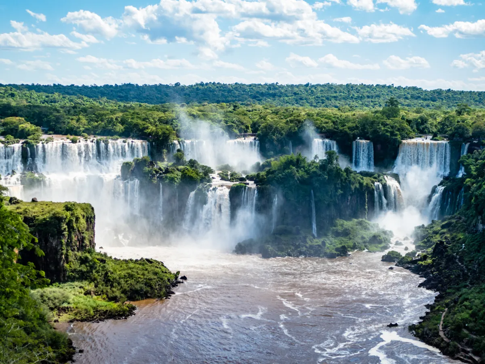
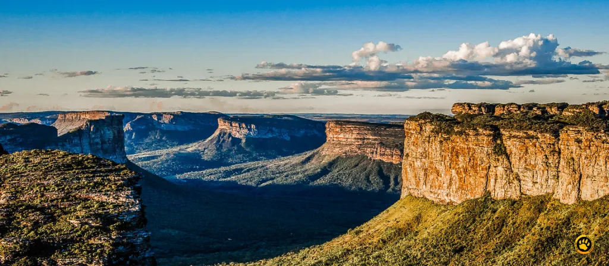
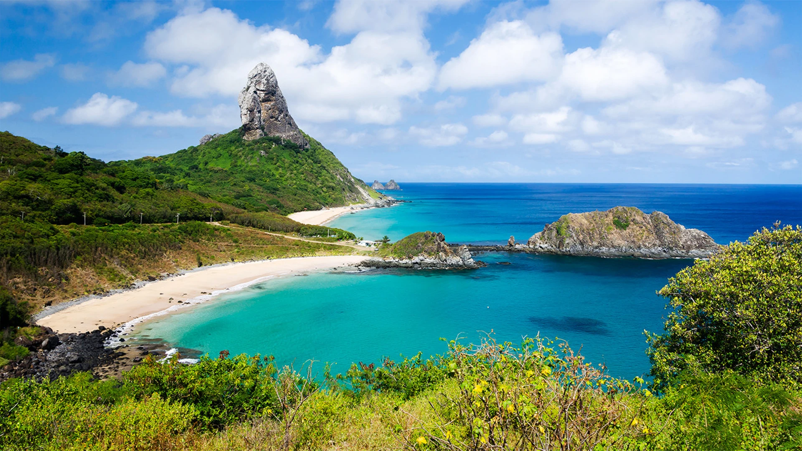
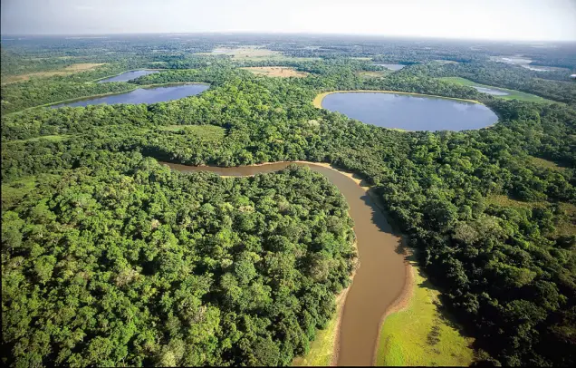

O Cristo Redentor é uma das sete maravilhas do mundo moderno e símbolo do Brasil, localizado no topo do Morro do Corcovado, no Rio de Janeiro. Com 38 metros de altura, a estátua de braços abertos representa paz e acolhimento. É famoso por oferecer uma das vistas panorâmicas mais belas da cidade, incluindo praias, montanhas e a Baía de Guanabara. O melhor horário para visitar é pela manhã ou no fim da tarde, quando a iluminação favorece fotos inesquecíveis, e os meses de outono e inverno costumam ter céu mais limpo.
As Cataratas do Iguaçu são um dos maiores conjuntos de quedas d’água do mundo, com mais de 270 saltos espalhados entre Brasil e Argentina. No lado brasileiro, passarelas permitem uma visão privilegiada da força e beleza da natureza. É possível ainda fazer passeios de barco que levam os visitantes bem próximos às quedas, proporcionando uma experiência única e emocionante. A época de cheia, entre outubro e março, garante um espetáculo ainda mais impressionante pelo grande volume de água.

Os Lençóis Maranhenses formam uma paisagem única de dunas de areia branca intercaladas por lagoas de água cristalina que surgem com as chuvas. A melhor época para visitar é entre junho e agosto, quando as lagoas estão cheias e propícias para banho. Os passeios geralmente são feitos em veículos 4x4 ou trilhas guiadas, levando os visitantes a explorar diferentes lagoas e dunas. O cenário é considerado um dos mais incríveis do Brasil pela sua beleza rara e intocada.
A Chapada Diamantina é um dos destinos mais procurados para o ecoturismo no Brasil, conhecida por suas inúmeras cachoeiras, grutas e cânions. Trilhas famosas, como a do Vale do Pati, atraem aventureiros em busca de contato intenso com a natureza. Os mirantes oferecem vistas impressionantes, como o da Pedra do Morro do Pai Inácio, de onde se observa o pôr do sol sobre as montanhas. O destino é ideal para quem gosta de caminhadas e paisagens de tirar o fôlego.
Fernando de Noronha é um arquipélago famoso por suas praias preservadas, consideradas entre as mais bonitas do mundo. O local é um paraíso para amantes de mergulho e snorkeling, oferecendo águas cristalinas com rica vida marinha. Existem regras ambientais rígidas que controlam o número de visitantes, garantindo a preservação do ecossistema. Além da beleza natural, a ilha proporciona experiências inesquecíveis em contato direto com golfinhos, tartarugas e corais.
O Pantanal é a maior planície alagável do planeta e um dos melhores lugares para observação de fauna selvagem no Brasil. É possível avistar onças, jacarés, capivaras, aves e muitas outras espécies em safáris fotográficos. A melhor época para visita é durante a estação seca, entre maio e setembro, quando os animais se concentram próximos às áreas de água. Os passeios de barco e trilhas proporcionam contato direto com a biodiversidade única da região.